| 日付 | 2009年11月1日（日） |
|---|---|
| 山域 | 奥多摩 |
| メンバー | グループ（男2女5） |
| 山行形態 | 日帰り |
| アクセス | 電車、バス |
| ルート (Map) | 鶴峠→奈良倉山→鶴寝山→大ダワ→小菅ノ湯 |
山仲間数名と奥多摩の奥部にある鶴寝山に行く。
あまり広く知られた山ではないが、自然がよく残っていて
この時期は紅葉を見るのによさそうだ。
9:33 鶴峠バス停到着。標高870m。
バスはそこそこ混雑していて、大勢のハイカーがここで下車する。
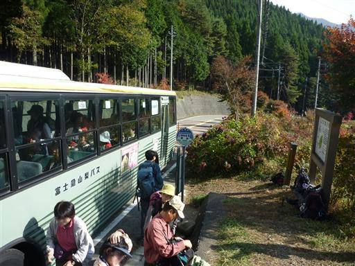
紅葉真盛りの登山道を登っていく。
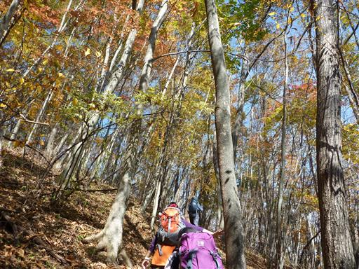
どっしりとした三頭山。奥多摩を代表する山だ。
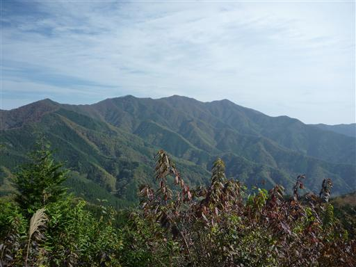
11:03 奈良倉山山頂到着。標高1349m。
樹林に覆われた平凡なピーク。
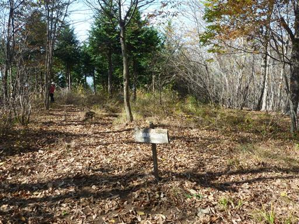
山頂近くの展望台からは霞んではいるが、富士の姿が望める。
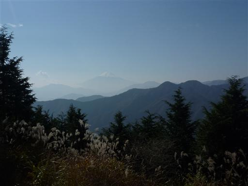
奈良倉山からの稜線はすばらしい紅葉が広がっている。
道は広く、アップダウンも少なくて、ハイキングにちょうど良い道だ。
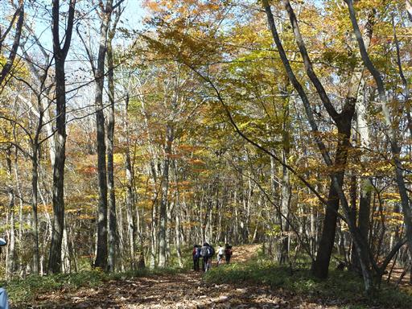
視界が開けたところからは、周囲の山々が見渡せる。
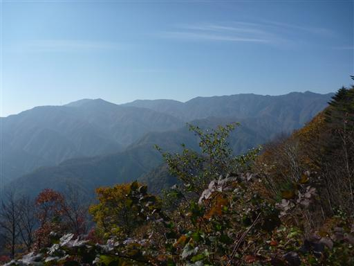
松姫峠に到着。ここまで車道がついていて、紅葉狩に来た観光客がたむろしている。
行きに使ったバスも乗り続けるとここまで来るようだ。
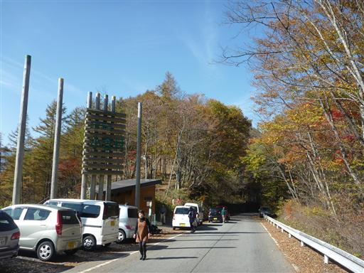
峠を越えて再び登山道に入っていく。
この道は牛ノ寝通りと呼ばれていて、遠く大菩薩まで続いている。
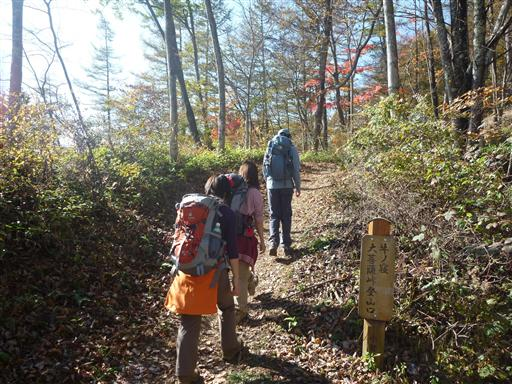
12:36 鶴寝山山頂到着。標高1368m。
ここで腰を下ろして昼食をとることにする。
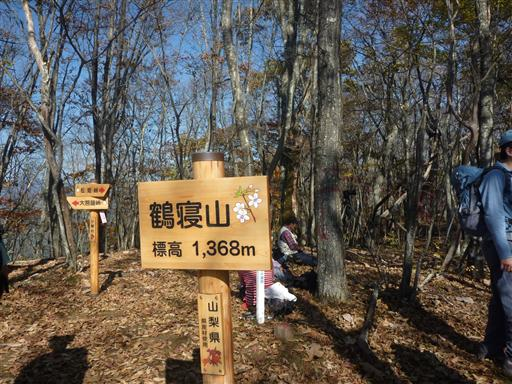
40分ほど山頂で休憩し、出発。
登山道脇には大きなブナの木が生えている。
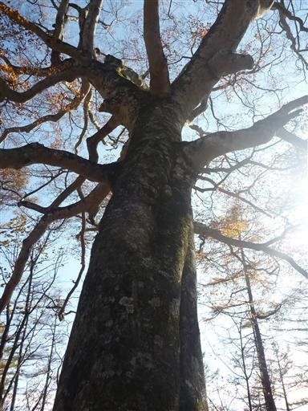
紅葉と黄葉。
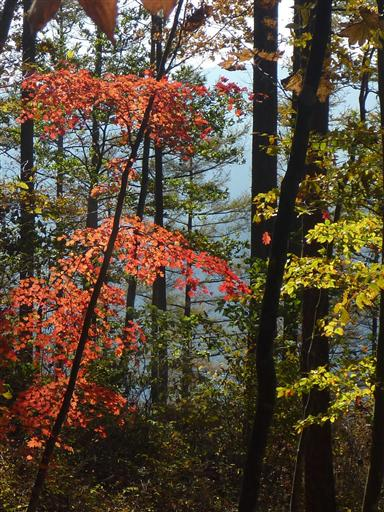
巨大なトチの木。一見普通の木に見えるが、人と比べるとその大きさが分かる。
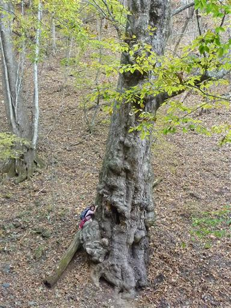
近くから見上げる。幹は相当に太い。
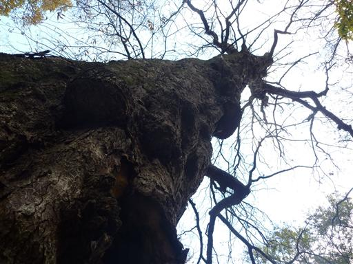
道は次第に尾根を外れ、沢筋に下りてくる。
沢にはワサビ田が造られている。水がきれいなのだろう。

下山。この辺りの小菅集落は非常に山奥深いところだ。
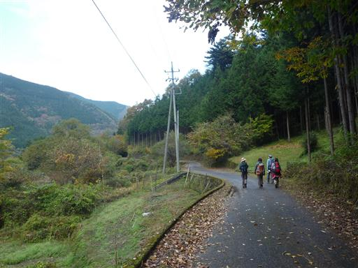
小菅の湯に寄っていく。ここの温泉は前から来て見たかったところだ。
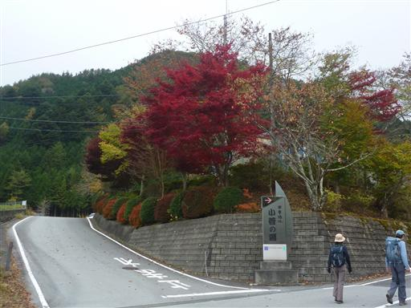
紅葉の時期の奥多摩とはいえ、山奥にあるので大混雑はしていなかった。
16時半の最終バスに乗って帰宅する。
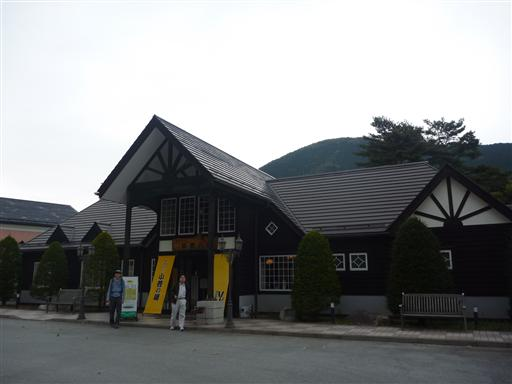